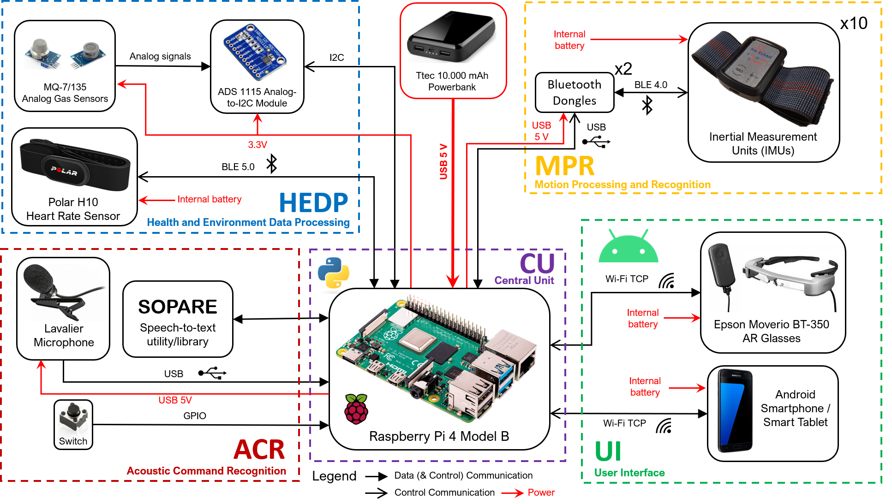
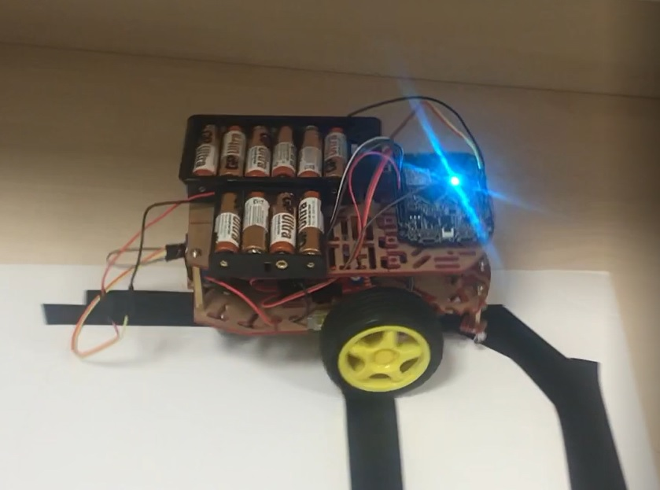
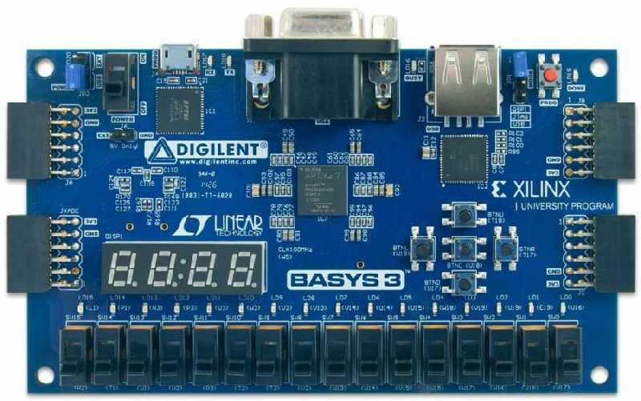
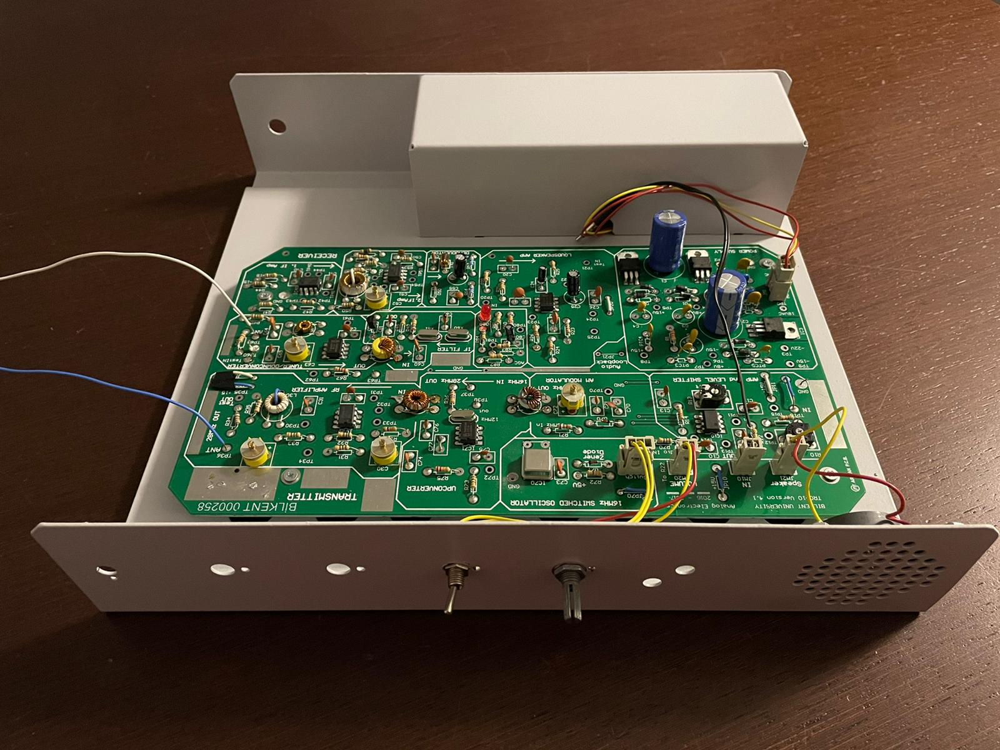

Projects
SmartBody (Bilkent University Capstone Project)
 A body system to provide emergency detection and monitoring of the subject by processing and interpreting the data collected by the various wearable sensors placed on the body was designed and developed for HAVELSAN as a part of the academic, industrial design project.
Maze Solver Robot
 A robot that can solve and find the exit of any maze without loops was designed and implemented. The right-hand-rule algorithm to solve mazes was implemented and optimized at the embedded-systems level. Motors of the robot were optimized to save more battery life for optimum speed and maneuverability by using Motor classes- written in C++, operating on FRDM-KL25Z board.
Clap Switch

Youtube Page: https://youtu.be/ILgCQ2XesAM
A clap triggered system that can turn on or off any electronic device connected to it was designed and implemented. The algorithm for detecting claps in terms of frequency, duration, and amplitude was developed and optimized - written in VHDL, operating on BASYS3 FPGA Board.
Hotel Classifier
 Implementation of three machine learning models to classify the type of hotel based on the hotel booking demands. The learning algorithms of Naive Bayes Classifier, Logistic Regression, and Multi-Layer Perceptron were analyzed and implemented from scratch in detail.
Implementation of three machine learning models to classify the type of hotel based on the hotel booking demands. The learning algorithms of Naive Bayes Classifier, Logistic Regression, and Multi-Layer Perceptron were analyzed and implemented from scratch in detail.
Car Price Regressor
 A car price predictor model was designed and tested on over 400,000 car samples using three different algorithms: Random Forest, Neural Networks, and Logistic Regression.
A car price predictor model was designed and tested on over 400,000 car samples using three different algorithms: Random Forest, Neural Networks, and Logistic Regression.
TRC-10
 An uncertified radio transmitter and receiver working within 10 meters was designed, implemented, and tested.
Don't Starve!
 An Android application that offers recipes according to the ingredients in the user's kitchen. Designed with Java, it operates on any Android device.
An Android application that offers recipes according to the ingredients in the user's kitchen. Designed with Java, it operates on any Android device.